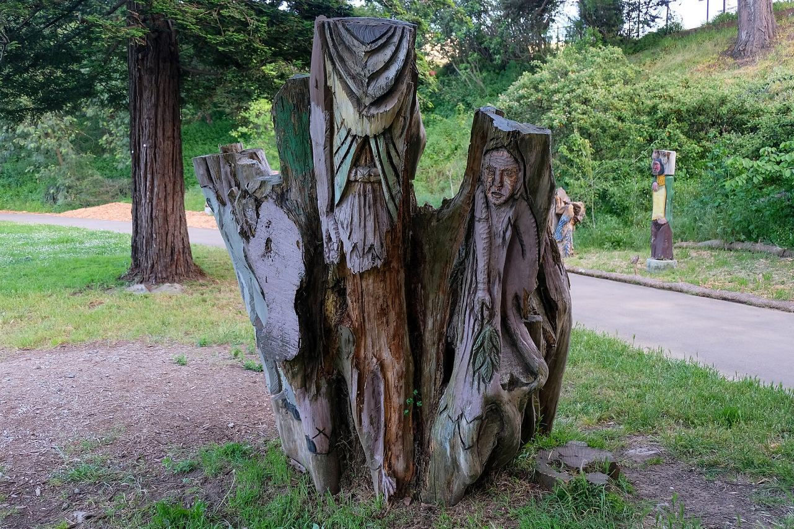

Outer Mission
A residential district south of the Mission proper, built up in the first decades of the 20th century around the streetcar lines to Daly City.

Map
Named buildings and landmarks
-
1

-
2
-
3
-
4
-
5
Streets documented so far
- Alemany Boulevard
1 building, built 1938. - Capistrano Avenue
1 building, built 1925. - Cayuga Avenue
1 building, built 1880. - Delano Avenue
1 building, built 1913. - Harrington Street
A 1908 house recorded as Jerry Garcia's home with his grandparents after 1947. - Mission Street
1 building, built 1963. - Oneida Avenue
1 building. - Onondaga Avenue
1 building, built 1979. - Otsego Avenue
1 building, built 1912. - Ottawa Avenue
1 building, built 1940. - Regent Street
1 building, built 2008. - Rousseau Street
1 building. - San Gabriel Avenue
2 buildings, built 1913. - San Jose Avenue
The San Francisco and San Mateo Railway's 1901 Geneva car barn, a San Francisco landmark since 1985. - Santa Rosa Avenue
1 building, built 1952. - Seneca Avenue
1 building, built 1997. - Sergeant John V Young Street
The Ingleside police station, built 1909-1910 on land ceded from Balboa Park.
Parks and public spaces
- Balboa Park
Neighborhood park or playground, 24.9 acres. - Geneva Carbarn
Mini park, 15,246 sq ft. - Geneva Community Garden
Community garden, 12,632 sq ft.
Historic districts here
Adjacent neighborhoods
The Excelsior adjoins east along Mission Street and Bernal Heights north-east beyond Alemany Boulevard. Glen Park is north past the Interstate 280 interchange, West of Twin Peaks north-west above it, and Oceanview / Merced / Ingleside west across the freeway.